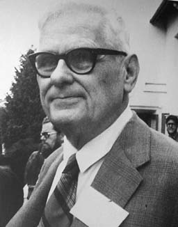

function forEach(xs, fn) {
for (var i = 0; i < xs.length; i++) {
return fn(xs[i]);
}
}
function greaterThan(n) {
return function(m) {
return m > n;
}
}
var greaterThan10 = greaterThan(10);
greaterThan10(11);
//=> true
- Powerful level of abstraction
- Specifically, abstraction over actions not just values
function unless(test, then){
if (!test) then();
}
function repeat(times, body){
for (var i = 0; i < times; i++) body(i);
}
repeat(3, function(n){
unless(n % 2, function(){
console.log(n, "is even");
});
});
Making Our Own
function getText(el){ return el.innerText }
var links = document.getElementsByClassName('link');
map(links, getText);
//=> ["Home", "About", "Blog", "Contact"]
Instead of passing a function into `map`, could write a HOF that instead takes a function and turns into a mapping:
function splat(fn){
return function(xs){
return Array.prototype.map.call(list, fn);
}
}
// Create a new mapping function from `pluck`:
var mapGetText = splat(getText);
mapGetText(links);
//=> ["Home", "About", "Blog", "Contact"]
If we didn't use `splat`, we'd have to write something like this out every time we wanted to construct a function that maps an array to a result:
function mapGetText(xs){
return xs.map(function(x){
return x.innerText;
});
}
What about objects?
get - takes the name of a property and returns a function
that gets that property from an object:
function get(prop){
return function(object){
return object[prop];
};
}
var user = {
'name': 'John',
'age': 32,
'location': 'London'
};
get('location')(user);
//=> 'London'
var users = [
{ 'name': 'John',
'age': 32,
'location': 'London' },
{ 'name': 'Wendy',
'age': 19,
'location': 'Amsterdam' },
{ 'name': 'Sheila',
'age': 41,
'location': 'New York' }
];
Now we can make our earlier splat function work for us:
var firstNames = splat(get('name'))(users);
//=> ["John", "Wendy", "Sheila"]
// Which is nicer that writing:
var firstNames = splat(function(user){
return user.name
})(users);
Such a common pattern that we can take things up another level:
function pluck(prop){
return splat(get(prop));
}
pluck('name')(users);
//=> ["John", "Wendy", "Sheila"]
Libraries like Lo-Dash implement this in a slightly different format:
_.pluck(users, 'name');
//=> ["John", "Wendy", "Sheila"]
Interlude - A Brief History
1930s
Alonzo Church


Lambda Calculus
- Formal systems in mathmatical logic and computer science for expression computation using only:
- function abstraction
- function application
// Abstraction - (λx.x)
function(x){ return x };
// Application - (ƒ x)
(function(x){ return x })(y);
/* Functions that return functions
:: λx.λy.x + y */
function(x){
return function(y){
return x + y;
}
}
/* Functions that take functions as input
:: λƒ.λx.(ƒ x) */
function(fn){
return function(x){
return fn(x);
}
}
Look familiar?
First-class functions & higher-order functions
By our powers combined
Haskell Curry

Combinatory logic
Combinators > abstraction
- Function abstraction replaced with a set of combinators, primitive functions that contain no bound variables:
// Function abstraction
function(x){ return x };
//=> x
// "Identity" or I combinator
var I = function(x){ return x; };
I(ƒ);
//=> ƒ
// "Kestrel" or K combinator
var K = function(x){
return function(y){
return x;
}
};
K(5)(10);
//=> 5
If Objects are nouns and Methods are verbs, Combinators are the adverbs of programming.
- JavaScript Allongé, Reg Brathwaite
And now for something useful
function splat(fn){
return function(xs){
return Array.prototype.map.call(list, fn);
}
}
function get(prop){
return function(object){
return object[prop];
};
}
function pluck(prop){
return splat(get(prop));
}
Maybe
- JavaScript doesn't strongly enforce notion of variables or properties be something
- Have to write programs to account for values that may be nothing
function isSomething(value){
return value != null;
}
function checkAndRun(value){
if (isSomething(value){
// do something
}
}
var something = isSomething(value) ?
justRuns(value) : value;
Maybe
function maybe(fn){
return function(){
var i;
if (arguments.length === 0) {
return;
} else {
for (i = 0; i < arguments.length; ++i) {
if (arguments[i] == null)
return arguments[i];
}
return fn.apply(this, arguments)
}
}
}
function checkAndRun = maybe(function(val){
// do something
}
Combining maybe
function get(prop){
return function(object){
return object[prop];
};
}
var sparseArray = [
{ name: 'Matt' },
{ name: 'Tim' },
null,
{ name: 'Andy' }
// ....
];
sparseArray.map(get('name'));
//=> TypeError: Cannot read property 'name' of null
sparseArray.map(maybe(get('name')));
//=> ['Matt', 'Tim', null, 'Andy']